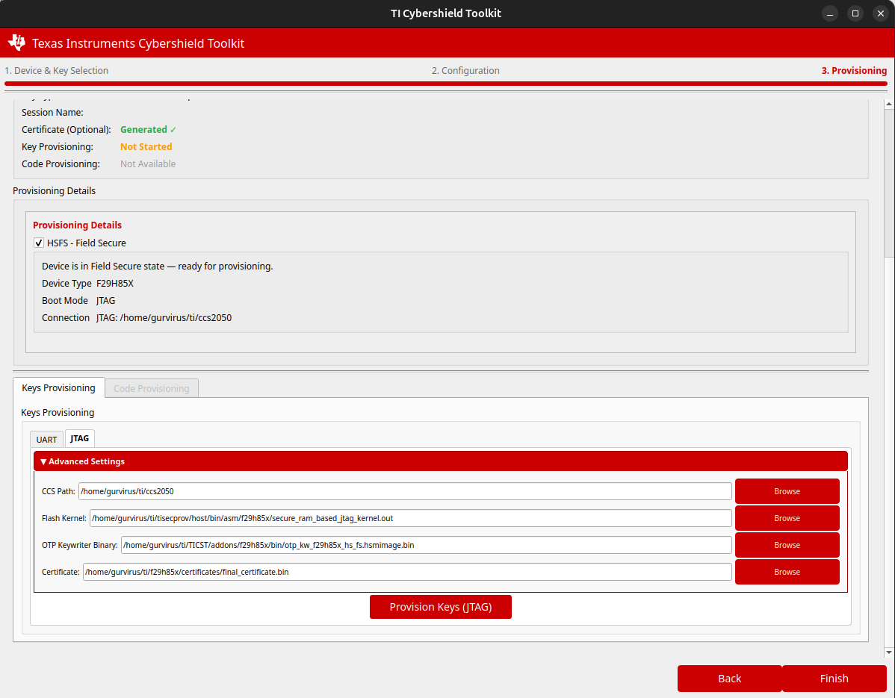
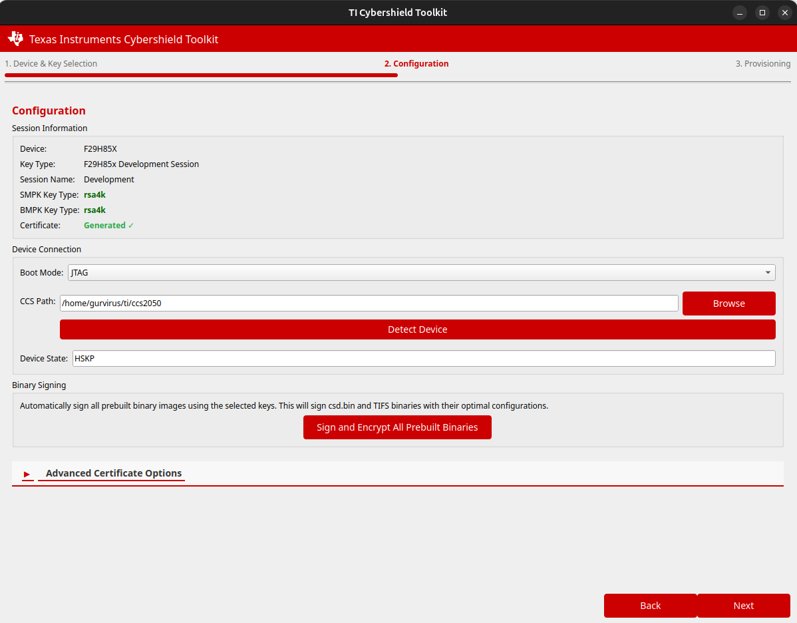
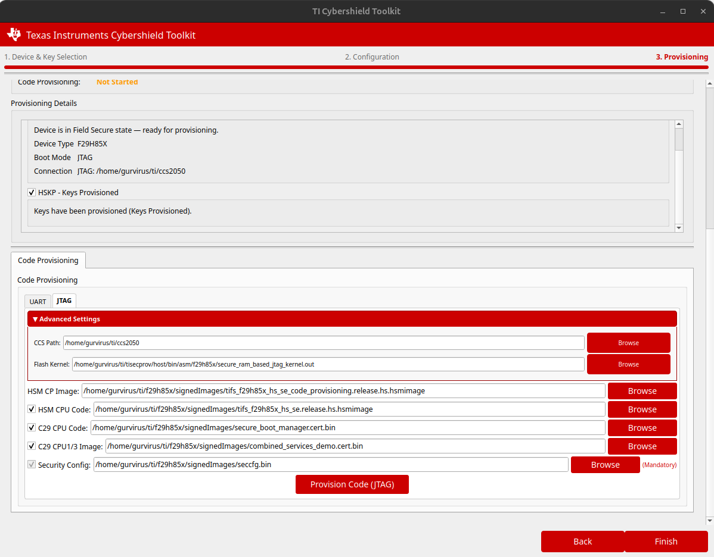

4 : Device Provisioning
This section covers the device provisioning process, including key provisioning and code provisioning.
4.1 Provisioning Overview
Device provisioning is a two-stage process:
Key Provisioning: Transitions the device from HS-FS (Field Secure) state to HS-KP (Key Provisioned) state by programming keys and other security parameters.
Code Provisioning: Transitions the device from HS-KP state to HS-SE (Security Enabled) state by programming the device with secure code.
Warning
Provisioning is an irreversible process. Once keys are programmed, they cannot be changed.
Incorrect provisioning can permanently affect device functionality.
Always perform provisioning in a controlled environment to avoid issues like electrical failures.
See also
For a complete description of device states and their properties, see 1.4 Device States and Transition.
See also
Prebuilt HSM binaries for key and code provisioning are available via the secure binaries addon. See 1.6 Secure Binaries Addon for details.
4.2 Connection Methods
The TI Cybershield Toolkit supports two main connection methods for device provisioning:
- UART Connection:
Uses serial communication via USB-to-UART adapter
Requires a properly configured serial port
Device must be in ROM boot mode or UART boot mode
- JTAG Connection:
Uses JTAG/XDS debug probe
Requires Code Composer Studio (CCS) installation
Provides more debugging capabilities
The choice of connection method depends on the device and your specific requirements.
4.3 Key Provisioning Process
4.3.1 Prerequisites
Before starting key provisioning:
Ensure you have a properly generated certificate (see 3 : Certificate Generation)
Confirm the device is in HS-FS state
Set up the appropriate connection (UART or JTAG). For JTAG, CCS 20.5.0 must be installed.
Have the necessary binary files (flash kernel, OTP keywriter binary)
4.3.2 Key Provisioning with GUI
The key provisioning process in the GUI:
Launch the GUI application by running the
cstguicommand in the terminal (see Installation Guide for setup)Navigate to the “Key Provisioning” tab
Select the connection method (UART or JTAG)
Provide the required file paths: * Flash kernel * OTP keywriter binary * Certificate * Serial port (for UART) or CCS path (for JTAG)
Click “Provision Keys” button
Follow the on-screen instructions to complete the process
Verify successful provisioning with the device state detector
Note
If the secure binaries addon is installed, the OTP keywriter binary is automatically detected and configured for the selected device. Manual configuration is only required if the addon is not installed.
The JTAG flash kernel is included with the package at
host/bin/asm/f29h85x/secure_ram_based_jtag_kernel.outand is pre-populated automatically.
Warning
The secure binaries addon as part of 26.00.00_STS includes only the SR_10 (Rev A) OTP Keywriter binary.
Users with Rev B or Rev C silicon (SR_20) must obtain the SR_20-specific OTP Keywriter binary separately from the SBL Keywriter package. Contact a TI representative for more information.
{kind=link}

To configure custom binaries:
In the Key Provisioning tab, click Advanced Settings (▼ button)
Update the binary paths as needed: * CCS Path: Path to Code Composer Studio installation (for JTAG) * JTAG Flash Kernel: Path to your device-specific JTAG kernel binary * OTP Keywriter Binary: Path to your device-specific OTP keywriter/HSM binary * Certificate: Path to the generated certificate file
Close Advanced Settings and proceed with “Provision Keys via JTAG”
4.3.3 Key Provisioning with CLI
To provision keys using the command-line interface via JTAG:
cst --device f29h85x jtag_keyprov \
--ccs-path CCS_PATH \
--certificate PATH_TO_CERTIFICATE \
--otp-kw-bin PATH_TO_OTP_KW_BIN \
--jtag-kernel PATH_TO_JTAG_KERNEL
Example:
cst --device f29h85x jtag_keyprov \
--ccs-path ~/ti/ccs2050/ \
--certificate ~/ti/f29h85x/certificates/final_certificate.bin \
--otp-kw-bin ~/ti/TICST/addons/f29h85x/bin/otp_kw_f29h85x_hs_fs.hsmimage.bin \
--jtag-kernel host/bin/asm/f29h85x/secure_ram_based_jtag_kernel.out
Parameters:
--ccs-path: Path to CCS installation (required)--certificate: Path to the certificate file (required)--otp-kw-bin: Path to the OTP keywriter binary (required). If the Security Addon is installed, this is found at~/ti/TICST/addons/f29h85x/bin/.--jtag-kernel: Path to the JTAG kernel binary (required)
4.4 Device Configuration and Binary Signing
Before provisioning code, binaries must be signed and encrypted with your Secondary Manufacturer keys (SMPK/SMEK). The Configuration page (step 2 in the GUI workflow) is where this is performed.
If the Security Addon is installed, all prebuilt binaries from the addon can be signed and encrypted in a single step. On the Configuration page, click Sign and Encrypt All Prebuilt Binaries to automatically sign and encrypt all of the following addon binaries using your provisioned SMPK/SMEK keys with their optimal configurations:
Prebuilt TIFS HSSE Firmware — TI’s HSM firmware image for the HS-SE state
Prebuilt C29 Secure Image — reference C29 application image
Security Configuration (seccfg) — device security configuration binary
{kind=link}

Once signed, these binaries are immediately ready to use for code provisioning — no further manual signing steps are required.
Note
The Sign and Encrypt All Prebuilt Binaries button operates exclusively on the prebuilt binaries included with the Security Addon. For signing and encrypting your own custom binaries, use the Advanced Certificate Options section on the Configuration page.
4.5 Code Provisioning Process
Important
All binaries to be flashed during code provisioning must be signed and encrypted using the Secondary Manufacturer keys (SMPK/SMEK) that were programmed onto the device during key provisioning. See section 4.4 for how to sign and encrypt binaries before proceeding.
4.5.1 Prerequisites
Before starting code provisioning:
Ensure the device is in HS-KP state (key provisioned)
Set up the appropriate connection (UART or JTAG). For JTAG, CCS 20.5.0 must be installed.
Have the necessary binary files (signed and encrypted with your Secondary Manufacturer keys). If the Security Addon is installed, use Sign and Encrypt All Prebuilt Binaries on the Configuration page to produce all required signed binaries in one step (see section 4.4): * Flash kernel * HSM code provisioning image * HSM CPU code (optional) * C29 CPU code (optional) * Security configuration (required for HS-KP devices)
4.5.2 Code Provisioning with GUI
{kind=link}

The code provisioning process in the GUI:
Launch the GUI application by running the
cstguicommand in the terminal (see Installation Guide for setup)Navigate to the “Code Provisioning” tab
Select the connection method (UART or JTAG)
Provide the required file paths: * Flash kernel * HSM code provisioning image * HSM CPU code (optional) * C29 CPU code (optional) * Security configuration (required for HS-KP devices)
Select which components to provision using the checkboxes
Click “Provision Code” button
Follow the on-screen instructions to complete the process
Verify successful provisioning with the device state detector
4.5.3 Code Provisioning with CLI
JTAG:
To provision code using the command-line interface via JTAG:
cst --device f29h85x jtag_codeprov \
--ccs-path CCS_PATH \
--jtag-kernel PATH_TO_JTAG_KERNEL \
--hsm-image PATH_TO_HSM_CODE_PROV_IMAGE \
--hsm-cpu-code PATH_TO_HSM_CPU_IMAGE \
--c29-cpu-code PATH_TO_C29_CPU_IMAGE \
--seccfg PATH_TO_SECCFG
Example:
cst --device f29h85x jtag_codeprov \
--ccs-path ~/ti/ccs2050/ \
--jtag-kernel host/bin/asm/f29h85x/secure_ram_based_jtag_kernel.out \
--hsm-image ~/ti/f29h85x/signedImages/tifs_f29h85x_hs_se_code_provisioning.release.hs.hsmimage \
--hsm-cpu-code ~/ti/f29h85x/signedImages/tifs_f29h85x_hs_se.release.hs.hsmimage \
--c29-cpu-code ~/ti/f29h85x/signedImages/secure_boot_manager.cert.bin \
--seccfg ~/ti/f29h85x/signedImages/seccfg.bin
Parameters:
--ccs-path: Path to CCS installation (required for JTAG)--jtag-kernel: Path to the JTAG kernel binary (required)--hsm-image: HSM code provisioning image — this is the image specifically built for the code provisioning flow, not the standard HSM runtime image (required)--hsm-cpu-code: HSM CPU runtime image to be flashed (optional)--c29-cpu-code: C29 CPU image to be flashed (optional)--seccfg: Security configuration binary (required for HS-KP devices)
Note
Prebuilt versions of --hsm-image, --hsm-cpu-code, and --c29-cpu-code are
available in the Security Addon package at ~/ti/TICST/addons/f29h85x/. After signing
and encrypting them with your SMPK/SMEK keys (see section 4.4), the signed
outputs will be in your configured output directory ready for use here.
UART:
To provision code using the command-line interface via UART:
cst --device f29h85x uart_codeprov \
--uart-kernel PATH_TO_UART_KERNEL \
--port SERIAL_PORT \
--target TARGET_BAUD \
--input INPUT_PARAMS \
--hsm-image PATH_TO_HSM_CODE_PROV_IMAGE \
--hsm-cpu-code PATH_TO_HSM_CPU_IMAGE \
--c29-cpu-code PATH_TO_C29_CPU_IMAGE \
--seccfg PATH_TO_SECCFG
Example:
cst --device f29h85x uart_codeprov \
--uart-kernel ~/ti/f29h85x/signedImages/ram_based_uart_sbl.cert.bin \
--port /dev/ttyACM2 \
--target 115200 \
--input 3,5,6,7 \
--hsm-image ~/ti/f29h85x/signedImages/tifs_f29h85x_hs_se_code_provisioning.release.hs.hsmimage \
--hsm-cpu-code ~/ti/f29h85x/signedImages/tifs_f29h85x_hs_se.release.hs.hsmimage \
--c29-cpu-code ~/ti/f29h85x/signedImages/secure_boot_manager.cert.bin \
--seccfg ~/ti/f29h85x/signedImages/seccfg.bin
Parameters:
--uart-kernel: Path to the RAM-based UART SBL kernel binary (required)--port: Serial port connected to the device (e.g./dev/ttyACM2)--target: Target baud rate (e.g.115200)--input: Comma-separated list of component IDs to provision:3: HSM code provisioning image (always required)5: Security configuration6: HSM CPU code7: C29 CPU code
--hsm-image: HSM code provisioning image (same as JTAG)--hsm-cpu-code: HSM CPU runtime image to be flashed (optional)--c29-cpu-code: C29 CPU image to be flashed (optional)--seccfg: Security configuration binary (required for HS-KP devices)
Important
The --uart-kernel (RAM-based UART SBL) must be signed and encrypted with the same
SMPK/SMEK keys that were provisioned onto the device during key provisioning. Use the
Sign and Encrypt All Prebuilt Binaries button on the Configuration page
(see section 4.4) to produce a correctly signed version from the prebuilt
binary included in the Security Addon.
4.6 Verifying Device State
After provisioning, it’s important to verify that the device state has changed as expected.
4.6.1 Using the Device State Detector
The TI Cybershield Toolkit includes a device state detector that can identify the current state of a device:
- Using GUI:
Navigate to the “Device State” section
Click “Detect Device State” button
View the detected device state information
Using CLI:
For UART:
cst --device f29h85x devTypeUART \
--uart-kernel PATH_TO_UART_KERNEL \
--port SERIAL_PORT \
--targetbaud BAUD_RATE
Example:
cst --device f29h85x devTypeUART \
--uart-kernel ~/ti/f29h85x/signedImages/ram_based_uart_sbl.cert.bin \
--port /dev/ttyACM2 \
--targetbaud 115200
For JTAG:
cst --device f29h85x devTypeJTAG --ccs CCS_PATH
Example:
cst --device f29h85x devTypeJTAG --ccs ~/ti/ccs2050/
Expected states after provisioning: * After key provisioning: HS-KP (Keys Provisioned) * After code provisioning: HS-SE (Security Enabled)
Important
JTAG Debug Limitation After Code Provisioning: After code provisioning is completed using the JTAG flow, the device state detection via JTAG will fail because debug access is closed in the HS-SE state. JTAG cannot detect the updated device state once the device transitions to HS-SE.
To verify if the device has successfully transitioned to HS-SE state:
Navigate to the second page of the tool (Configuration page)
Select UART mode for device state detection
Click “Detect Device State” using UART
The tool will correctly identify the HS-SE state via UART communication
4.6.2 Interpreting Provisioning Logs
The TI Cybershield Toolkit creates detailed logs during the provisioning process. These logs contain important information about the provisioning status:
Key programming status: Success/failure of each key component
OTP programming status: Success/failure of OTP field programming
Code provisioning status: Success/failure of code component programming
Detailed error information: If provisioning fails
Log files are stored in the following locations:
* Key provisioning logs: ti_cst_f29h85x_0X_XX_XX/host/src/apps/tifs/kp_cp_f29h85x/log.txt
* Code provisioning logs: ti_cst_f29h85x_0X_XX_XX/host/src/apps/tifs/kp_cp_f29h85x/cp_logs.txt
Note
A debug response of 0x00000000 in the logs typically indicates successful programming, despite any error messages that might appear. For a full list of error codes, see 9.2 Error Code Reference.